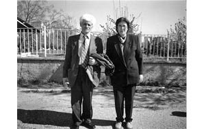

“O Yaralar Kapanmaz, O İşkenceler Unutulmaz. Ben Hiç Unutmuyorum.”
Fikriye Saymaz37
Eşim Müzekkir Saymaz Artvin Ellinci Yıl Ortaokulu’nda çalışan devrimci öğretmenlerden birisiydi, TÖB-DER’liydi ve Artvin sorumlusu olarak yönetiminde çalışıyordu. Yeni Demokrat gazetesine de yazılar yazardı. 12 Eylül Darbesi’nin hemen ardından gözaltına alındı. Önce Artvin Öğretmen Okulu’na götürdüler. Orada bir ay işkence gördü. Arkasından da Erzurum’a götürdüler ve cezasını orada tamamladı. TÖB-DER ve Dev-Yol davalarından yargılandı ama ceza almadı. Üç yıl yattı ve çıktı.
Darbeden Önceki Hayat
Ben çok erken evlendim, 16 yaşındaydım, bir köye gelin geldim. Eşim öğretmendi ve uzak bir yerde çalışıyordu, kayınvalide ve kayınpederle 5 sene kaldım beraber. Tabii ki üzgündüm, sıkıntılı bir durumdu, taze gelin yeni bir evde. Ne olur, onun halini siz düşünün artık. Politikadan ve siyasetten hiç anlamıyordum, ne zaman ki eşimle bir araya geldik o zaman ilgilenmeye başladım. Eşim gazete okuyordu, ben de gazete okumaya başladım. Sonra Artvin’e tayinimiz çıktı, orada Halkevleri’ne gittim, TÖB-DER’e gittim. Yürüyüşlere katılmaya başladım. Yani bir ilgi duydum siyasete, devrimin güzel olduğunu düşündüm, dürüst olduğunu hissettim. Ben de onlarla beraber yürüyüşlere, mitinglere, her yere gitmeye karar verdim kendi kendime ama eşimin de yardımı oldu tabii, o da beni bilinçlendirdi. Çok okudum.
Sonra iki çocuğumuz oldu. Çok güzel bir hayatımız vardı beraber. Köyde çalışıyordum, unumuzu, ekmeğimizi Artvin’e getiriyordum. Bir maaşla küçük bir çekirdek aile olarak yaşamımızı sürdürüyorduk.
Arkadaş topluluğumuz vardı. Öğretmen arkadaşlarla buluşurduk daha çok, birbirimize gider gelirdik. Siyasetten bahsederlerdi eşim ve arkadaşları, ben de onlara kulak misafiri olurdum. Bir şeyler almaya çalışırdım. Hiçbir zaman dantelden, halıdan, televizyondan konuşmak beni tatmin etmezdi.
Devrim olacağını düşünüyordum hep, her gün büyük bir umutla yaşıyordum. Bir gün devrim olacak, dürüstlük gelecek ülkeye, bolluk olacak, fakirin eli para tutacak, zenginler daha da etkisiz hale gelecek diye düşünüyordum ama ne yazık ki tersi oldu. 12 Eylül gelince biz çok kötü olduk. Ben çok üzüldüm ama başkalarının da umrunda değildi. Köylüler zaten ilgilenmiyor öyle şeylerle, konuştuğun zaman sana ne diyorlar, bana ne diyorlar. Gemini yürüt diyorlar.
Darbe Günleri
12 Eylül’le birlikte çok şey değişti benim hayatımda. Kalp rahatsızlığım sebebiyle Ankara’da doktora gelmiştim. O gün kalktım, Ankara’nın Cebeci semtinde tankları sokaklarda gördüm. Artvin’e ancak ertesi gün dönebildim. O gün bırakmadılar, sıkıyönetim var diye. Sabah erken bir saatte vardım Artvin’e. Bir gazete bayimiz vardı. Gazete bayisine yöneldim. Sabah namazı zamanıydı, yeni ışıklanmıştı ortalık. Baktım ki polisler dükkânın önüne bırakılmış bütün gazeteleri yırtıyorlar, dağıtıyorlar, parçalıyorlar, tekmeliyorlar. Neden böyle yapıyorsunuz diye sordum. Bana dediler ki “Siz teröristsiniz, terörist eşini aldık içeri, sizi mahvedeceğiz, sizi yok edeceğiz!” Tehdit ettiler beni, ben de eve gittim. O akşam kalbim tekrar teklemeye başladı, rahatsızlandım, gecenin birinde beni doktora götürdüler. Komşunun biri polisi aradı. Çünkü dışarıya çıkamıyoruz. Polis beni arabasıyla götürdü ve hastaneye bıraktı. İsmini bilmediğim devrimci bir doktor hastaneye yatırdı beni o gece, sabah olunca oranın başhekimi olan doktor Vasıf Atabey geldi, “Sen kimsin, nesin?” deyince ben “Müzekkir Saymaz’ın eşiyim” dedim. Beni hasta halimle apar topar dışarı attı. “Çık, senin hiçbir şeyin yok” dedi. Çıktım, sürüne sürüne yokuştan aşağıya Gazi İlkokulu’nun oraya indim. Valilik binasına geldim. Bir tanıdık rastladı da, beni aldı evime getirdi. Fakat o akşam yine hastalandım. Komşulara yalvardım, beni hastaneye götürün, diye. Dediler ki biz seninle gelemeyiz, hastaneye götüremeyiz. Yine kendim sürüne sürüne hastaneye gittim, tekrar doktora çıktım, ilaçlar aldım ve eve geldim. O zaman çocuklarım köydeydi. 3 gün yattım öylece.
Bu 3 gün boyunca hiç haber alamadım eşimden. Çok hastaydım, bize de kimse gelip gitmiyordu, korkusundan. Öğretmen Okulu’na indim, eşimi sordum, hiç kimseden bir cevap alamadım. Aradan 5-10 gün geçti, devamlı gidiyorum ama haber alamıyorum. Jandarmalarla konuşuyorum, eşya veremiyorum, üst baş veremiyorum, korkuyorum. Sonra da Çoruh’a bırakmışlar, öldürmüşler diye bir haber yayıldı. Öyle olunca ben daraldım tabii. Sonra bir başçavuşun evine gittim, gece, saat 10 civarıydı. Gittim, ona yalvardım. Ben korkuyorum, eşimi öldürdüler mi, ne olur bir haber getir, dedim. 10 gün sonra o başçavuş bana küçük bir pusula getirdi. Gece gittiğimde, eşya, üst baş götürmüştüm ve para vermiştim. Başçavuş sağ olsun veririm demişti. Sonrasında bir pusula geldi eşimden eşyaları aldığına dair. Başçavuş, gazetenin arasına koymuştu pusulayı, ben de aldım okudum. Eşimin sağ olduğunu 10 gün sonra o pusulayla öğrendim. Sonra her gün Öğretmen Okulu’na gittim. Bir haber alamıyorum, jandarmalarla konuşuyorum. Bizi kovuyorlar, geri dönüyorum.
Bir gün oranın sorumlusu olan komutanla görüşmeye karar verdim. Giyindim güzel, makyaj yaptım. Hayatımda makyaj yapmamışım. Makyaj eşyalarını komşulardan aldım. Gittim ve askerlere dedim ki, ben komutanın akrabasıyım. Jandarmalar haber verdiler. İki tane komutan beni kabul etti, buyursun gelsin dediler. Ben kalktım gittim. İçeride 3-4 tane rütbeli asker oturuyordu yan yana. Komutan beni görünce “Hanımefendi, ben tanımadım sizi” dedi. Ben de dedim ki “Tanırsınız, ben Müzekkir Saymaz’ıın eşiyim.” Öyle deyince “Gelin bunu buradan götürün, neden aldınız içeri?” diye bir anda askerlere bağırmaya başladı. Beni karga tulumba kollarımdan sürüklediler ama bir yandan da direniyorum. Sonuçta beni dışarı attılar. Oysa ki ben yalnızca bir haber istedim. Kocamı ne yaptınız, öldürdünüz mü, bir kâğıt istiyorum yalnızca, bir pusula yazsın göndersin, ben eşimin yazısını tanırım dedim. Sağ mıdır ölü müdür bilmek istiyorum.
Bu arada çeşit çeşit işkencelerin söylentileri var ortalıkta. Bunları da duyuyoruz. Bir gün bir öğretmen arkadaşa dedim ki, haydi gidelim de bu piyade yüzbaşısı iyi bir adammış, bir de eşi öğretmenmiş onun, öğretmen öğretmenlerin halinden anlar, onunla konuşalım. Komutanlığın Piyade bölümüne gittik, yoktu. Bekledik uzunca bir süre, akşamüzeri geldi yüzbaşı. Dedik ki eşlerimizden haber alamıyoruz, öldürdüler mi sağ mı, biz sizden yardım istiyoruz. Hem ağlıyoruz hem de konuşmaya çalışıyoruz. Arkadaşımın da bir akrabası içerideydi. O da benimle geldi sağ olsun. Sonra bu komutan dedi ki “Yenge elimden geleni yaparım.” Çok iyi davrandı bize. Eve geri döndüm, ertesi gün bir daha gittim. Baktım ki bunları lif levha tarafına geçirmişler. Öğretmen Okulu yanında Lif Levha fabrikası vardı, oranın da lojmanları vardı. Arada yüksek bir duvar var, duvarın öteki tarafına geçirmişler. Biz orada dururken bir tane jandarma elinde bir pusulayla geldi bana. Pusulayı okudum, Müzekkir’in yazısı, o kadar sevindim ki, mutlu oldum. “Enver Karagöz yürüyemiyor, koltuk değnekleri getir, bir de tavuk pişir bize getir” diye yazmış. Haber aldığıma çok sevindim.
Bu arada çocuklar da benimle gelmişti babalarını görmek için ama göremediler tabii ki. Camdan görebiliyorsun ancak ama yol epey uzak, zor seçiyorsun. Müzekkir ve yanındakiler Enver’i böyle kollarından tutmuşlar, camın önüne gelmişler. Camdan, ben de uzaktan karaltı şeklinde görüyorum. Çünkü saç sakal birbirine karışmış, zor tanıyorum, uzak yer. Oradan gördüm, onlar el salladılar, iyi dedim şükrettim, sevindim, eve geldim.
Hemen Borçkalı bir arkadaşımın yanına gittim. Onun koltuk değnekleri vardı, onları aldım. Çarşıdan dört tane tavuk aldım, onları fırında kızarttım güzel, koydum çantaya, değnekleri de aldım Öğretmen Okulu’na indim. Lif levha tarafından bir asker geldi, elimden hemen onları aldı, içeri götürdü.
Ertesi gün geldim çocuklar ağlaşıyorlar evde “Biz de babamızı görmek istiyoruz, anne sen görmüşsün, uzaktan da olsa görelim” diyorlar. Sonraki gün tekrar gittim, bir asker pusula verdi bana. Pusulada yazıyor ki “Fikriye biz bu akşam Erzurum’a gidiyoruz, iyiyiz, merak etme sen, çocuklara selam.” Çocukları da indirdim, çocuklar ağlamaya başladı. İki çocuk, kız ağlıyor, oğlan daha küçük, Lif Levha’nın önünü kaldırıyor çocuklar. Onları sakinleştirdim “Yavrum iyiymiş babanız, Erzurum’a gideriz, siz üzülmeyin” dedim. Mecburen eve geri döndük.
Darbenin Ekonomisi
12 Eylül sabahıyla hayatımız ekonomik olarak tamamen değişti. Artık kalbimin ağrıları da arttı. Parasızlık başladı bir yandan da. Ailede tek çalışan kişi eşimdi, o da içeri alınınca para pul kesildi, zor durumda kaldım. Gazete bayimiz vardı. Oradan beş 10 kuruş geliyordu ama ne yazık ki onu da örgüt dükkânıdır diye lanse ettiler, oradan da artık hayır göremez olduk.
Kira ödeyemez duruma geldim ve köye taşınmayı düşündüm, Artvin’de eşyamı topladım, evimi topladım, denk yaptım. Köyümüz vardı. Dedim ki kendi kendime, köye giderim çocuklarımı köyde okuturum. Sonra bir sene kadar bekledim. Çünkü kaynım, eşimin kardeşi Balıkesir’de mühendisti, onun tayini çıktı Artvin’e o süreçte. Çıkınca eşyamızı aldık, geldik aynı eve yerleştik, kaynımla beraber yaşadım. Çünkü ben yalnız başıma ne kira ödeyebildim ne çocuklarıma para verebildim. Maaş diye bir şey yok zaten, köyden getirdiklerim de yetmedi, kira da ödeyemeyince onunla beraber kalmaya karar verdik, sağ olsun, kaynım da bizi kabul etti. Bir arada üç sene kadar kaldık. O yüzden yuvam bozulmadı yani, ona borçluyum biraz, kaynım sağ olsun. Para konusunda da yardımcı oldu. Çocuklarıma giysi aldı, okula gitmelerine yardımcı oldu. Onlar baktı, işte ben de onlara sığındım ama tabii çok zor oldu yani kolay bir şey değil eşyayı denk edip de öyle beklemek, o kadar zor ki... Sonra köye taşınmak sanki bana ölüm gibi geldi.
Müzekkir’in içeride olduğu dönemde dışarıdaki hayat mücadelesi çok zordu.
Hiç Unutamadığım An
Müzekkir, Erzurum Cezaevi’ne götürüldükten sonra çocuklar babamızı görmeye gidelim dediler. İkisini de aldım, doğru Erzurum’a gittik, meğer Erzurum çok soğukmuş, bilmiyorum ki o kadar soğuk olduğunu. O zaman da gençtim tabii. Gittik, çocukların soğuktan elleri donmaya başladı. Çok üşüdük, bende başörtüsü vardı, onu çocuklara sarıyorum ama yoksulluk var ya. Orada eldiven satılıyor ama almaya para yok ki ne ile alayım? Neyse akşam oldu, arkadaşlarla beraber gitmiştik, durumu iyi olanlar Gez Oteli’ne gidiyordu. Orada Gez Oteli vardı o dönemde. Ben de kötü bir otel, ucuz olanı seçiyordum. Para yok çünkü. Girdik, soğuk buz gibi. Çocuklar üşüdü, çocuklara sarılıyorum olmuyor. Bir de ne göreyim, baktım ki bütün yatak bit içinde. Çocuklarım bitlendi o gece orada. Neyse sabah oldu gittik. Eşimle görüştük, tabii çocuklarım çok ağladı. Çocuklarımın elleri, özellikle kızımın elleri dondu o görüşmede. Onu tekrar normale döndürene kadar çok acı çektim, doktora götürdüm o zaman. O ilk Erzurum seyahatini hiç unutamıyorum.
Erzurum’a gidince ancak bir gece kalabiliyorduk. Fazla nasıl kalalım, para yok, pul yok. Ben görüşlere gitmek isterdim param olmazdı. Arkadaşların arabaları vardı, orada yatanların akrabalarının. Onlardan rica ederdim beni de götürün diye. Onlar da sağ olsunlar götürürlerdi ama tek bacak üzerinde otururdum arabada. Çünkü yer yok, bir de çok araba tutardı beni. Böyle çok azaplar çekerdim ama yine de dik durmaya çalışırdım. Çocuklarımı kimseye muhtaç etmeyeyim diye çabalardım. Ayakta durmayı öğrendim, farklı tecrübeler edindim bu sebeple.
Müzekkir’e haklı olduğunu bildiğim ve güvendiğim için pek kızmadım ama perişanlık vardı bizde, yoksulluk diz boyu. Çocuklarına kitap alamıyorsun, defter alamıyorsun, giydiremiyorsun, para bulamıyorsun, yol parası yok, ziyarete gidemiyorsun...Onun için biraz kırgın gibiydim ama haklı olduğunu bildiğim için çok da fazla bir şey demezdim, ses etmezdim.
Toplumun Tepkileri
Bu süreçte insanlara çok kızdım açıkçası. Çünkü bizden uzak duruyorlardı. Bize ne kimse yardım etti ne de kimse elimizden tuttu. Ben iki çocukla kalakaldım. Arkadaş çevremiz de zaten uzaklaştı bizden, akrabalarımız da uzaklaştı, bize gidip gelen olmadı. Kendime kızmıyordum, eşime de kızmadım hiçbir zaman, davamıza inandığım için ama perişandık ve çok çektik. Ben çok dirençli bir kadınım. Birçok şeyi satın almadım, kendim diktim, kendim ürettim ama zor şartlarda başardım. Daha doğrusu yıkılmadım. Köyde çalıştım, daha çok çalıştım. Fasulyemi, bulgurumu, unumu her şeyimi getirdim köyden, ben hiç bakkal yüzü bilmiyorum, çocuklarım da bilmez, bakkaldan bir şey alıp da yemedik biz. Kayınbabam ve kaynımla beraber otururken para azıcık da olsa yetindim onunla, yani çok istemedim. Umudum vardı, onun için başardım sanırım. Hiç yıkılmadım, şu anda da yine dik duruyorum.
Çocuklar ve Zorunlu Göç
Çocuklarımın siyasetten uzak durmalarını istedim ben. Çünkü biz yoksul bir aileyiz, bir maaşla geçinen insanlarız. Çocuklarımın başına böyle bir şey gelmesin istedim. Eşime dayandım da çocuklarıma zor dayanırım diye düşündüm. Çocuklarıma kıyamam dedim. Öyle dedim ama işte o da olmadı.
Çocuklar o dönemde sıkça babamız nerede diye soruyorlardı. Babanız devrimci biri olduğu için, insanlara faydalı olduğu için aldılar içeri diyordum. Bir suç işlemedi diyordum. Çocuklara öyle anlatıyordum ben. Onlar sürekli ağlıyorlardı. Babamız neden içeride, işte biz babamızı isteriz, babam neden gelmiyor diye soruyorlardı. Kızım 13 yaşındaydı, oğlum da 10.
Müzekkir içerideyken kız kardeşim Ankara’ya getirdi kızım Sevgi’yi. Lise 2’deydi. Ben okutayım, benim yanımda kalsın, dedi. Aile parçalandı tabii, çok üzüldüm, etkiledi beni, psikolojik de etkiledi ama yine de diren Fikriye diyordum. Hayat böyle acı olduğu için çocuğumdan ayrılmıştım. Hani paramız olmadığı için aile dağılmıştı.
Biz de 1983’te Ankara’ya taşındık. Neden taşındık? Artvin’de çok baskı vardı. Kalmamız mümkün değildi. Polis baskısı vardı. Eşim içeride işkencelerdeydi. Dışarı çıktı, mesleğine geri dönemedi, işsiz güçsüz kaldı. Sonra Ankara’ya gelince burada bir dükkân açtık, bakkal dükkânı. Onunla idare ettik. Ben ekmek parası çıkarmak için dikiş dikmeye başladım. Ankara’da tekrar iki ameliyat geçirdim. Dikiş dikmekten bir gözüm şişti, çok kötü oldum, kapak inince ameliyat oldum. Üzüntüler etkiledi. Eşimi iki defa daha gözaltına aldılar Ankara’ya geldikten sonra. Tahsildarlık yapıyordu, akşama kadar gezerdi, topukları şişmiş olurdu eve gelince. Bakkal dükkânını sırayla çalıştırıyorduk. Eşim öğretmenliğe 1986 yılında dönebildi. E çocukların da düzeni bozuldu, etkileniyorlardı. Hem parasızlık hem babalarının devamlı polis tarafından Emniyet’e götürülmesi, bizim ailede huzursuzluk, sıkıntı ve hastalıklara neden oldu. Parasızlık bir taraftan, toplumun düzeni bir taraftan, baskı bir taraftan bizi çok yordu ve etkiledi. Kızımızı da öyle etkiledi. O da siyasete yöneldi. Oturur konuşurduk, kızım biz bu acıları çektik, sonu kötü oluyor, insanlara nefes aldırmıyorlar, sen ne kadar doğru olursan ol bu düzende nefes alamazsın, sonu içeride bulursun diye tabii ki çok söyledim ben. Çünkü çocuklarımın saçının teline zarar gelmesini istemiyordum. Kızıma derdim ki bir eylem varsa ben de geleyim, beraber olalım, beni de götür. Ne işin varsa beraber yapalım. Çocuğumu evimden, gözümden pek ayırmak istemedim gerçekten.
Sevgi Evden Ayrılıyor
O zaman Sevgi 23 yaşındaydı. Yakalanmadan önce üniversiteyi bırakıp evden ayrıldı. Bu kararını babasına, ben Artvin’deyken söylemiş. Benim haberim yoktu evden ayrılacağından. Bir akşam geldim ki Sevgi eşyalarını almış, evde yok. İki yıl illegal bir yaşam sürdü. Siyasal tercihini bilinçli olarak yapmıştı. Emperyalist güçlerin Türkiye üzerindeki etkilerinin daha çok artması, 12 Eylül baskılarının toplumda sürmesi, sömürü düzeninin toplumda devam etmesi Sevgi’nin siyasi düşüncesinin oluşmasında temel etkendir. Bunları kanıtlayan durum da babasının çektiği eziyetler, 12 Eylül’ü bizzat görerek yaşaması, evlerimize sık sık polislerin baskın yapmasıdır. Bu olaylar Sevgi’yi daha çok etkilemiştir bu siyasi düşünceye sahip olmasında. O zamanki adıyla Dev-Sol, şimdiki adıyla DHKP-C’ye katılmıştı. Biz nereye gittiğini, ne yaptığını bilmiyorduk. Basından 25 Mart 1992’de Adana’da yakalandığını öğrendik. İlk sorgusu Adana’da yapıldı. Malatya Cezaaevi’ne gönderdiler ve Sevgi, Malatya DGM’de yargılandı. Dava tek kişilik bir davaydı. Malatya Cezaevi’nde bir süre kaldı. Dava bir sene sürdü. Sevgi’ye eski Ceza Kanunu’nun 146. maddesinin 1. Fıkrası’na göre idam verdiler. Mahkeme heyeti iyi halden bunu müebbet hapse çevirdi. Malatya’dan sonra Amasya, Sakarya, Çanakkale, Manisa ve Uşak cezaevlerine gönderildi. 1999’daki depremde Sakarya Cezaevi’ndeydi. Sakarya Cezaevi’nin bir kısmı yıkıldı o depremde. Askerler ve gardiyanlar koğuşları ve cezaevinin dış kapısını kilitlemişler. Herkes canını kurtarmak için bir tarafa kaçışmış. İçeridekiler kapılar kilitli olduğu için depremin bitmesini yani bir anlamda ölümü beklemişler içeride. 2000’deki Hayata Dönüş Operasyonu’nda Sevgi Çanakkale’deydi. Operasyon 2 gün sürdü Çanakkale’de. Biz tutuklu yakınları operasyonu izliyorduk. Deliciler, kırıcılar, bombalar... Sesleri duyuyorduk ve görüyorduk. Orada 2 kişinin öldüğünü duyduk. Listeler asıldı. Gittik baktık ki, kadınları 27’şer kişilik gruplara ayırarak 4 bölgeye göndermişler. Sevgi ve diğer 26 arkadaşının Manisa Cezaevi’ne gönderildiğini öğrendik. Manisa Cezaevi’nde üstlerinde elbise olmadığını, yırtık pırtık olduğunu, her taraflarının köpük olduğunu, yüzlerinin esmer, kara, kirli paslı olduğunu, her taraflarının çizik olduğunu, yüzlerinde yaraların olduğunu ziyaretçiler olarak gördük. Onlar bizden çok acil olarak elbise istediler. Biz de Manisa halkının desteğiyle hemen elbiselerini aldık. İç elbisesi, dış elbisesi, battaniye, televizyon gibi ihtiyaçlarını bir gün içerisinde Manisa halkı fazlasıyla karşıladı. Onları Manisa’da öylece bıraktık, biz işimize döndük. Manisa’dan sonra, kendi istekleri de yoktu ama, Bakanlığın onayıyla Uşak Cezaevi’ne getirdiler. Halen de Uşak Cezaevi’nde yatıyor.
Kızım 1996’da cezaevinde ölüm orucuna girdi. Çok zor günlerdi. 12 kişi öldü, Sevgi sonuna kadar direndi. Bazı haklar verildi ve ölüm orucu bitirildi. Hayata Dönüş Operasyonu’ndan sonra yine ölüm oruçları başladı. 7 yıl sürdü, 122 kişi öldü. Sevgi 1 Mayıs 2006’da yine ölüm orucuna girdi. Tamamen umutsuzdum. 268 gün direndi. Yine bazı haklar verildi, Sevgi de ölüm orucunu bıraktı. Daha sonra 3 ay rehabilitasyonda kaldı. Ben de refakatçiydim. 3 ay birlikte kaldım.
Sevgi 1967 doğumlu. 46 yaşında. Bu, cezaevindeki yirmi birinci senesi. Müebbetin cezası 30 yıl diyor hukukçular. Yani 30 yıldan sonra çıkabilecek. Benim ömrüm hapishane kapılarında geçti bir anlamda. Artvin’den başladım. Ondan sonra Erzurum ziyaretleri başladı. Erzurum’dan sonra Sevgi’nin hapishane ziyaretleriyle devam etti. 65 yaşındayım, hâlâ da mücadele devam ediyor.
Biz Sevgi’yi hiçbir cezaevi sürecinde mutsuz görmedik. Umutsuz da görmedik. “Ben inandığım gibi yaşıyorum, herkes, her yerde inandığı gibi yapsın. Benim de cezaevindeki görevim dik durmak, devrimci onurumuzu korumak, mücadele azmimizi sağlam tutmak ve umutlarımızı her zaman canlı tutmaktır. Ben de bunu yapıyorum. Yaşamak denilen bir inanç meselesidir. Kimisi dışarıda mutlu yaşar, kimisi de içeride mutlu yaşayabilir.” gibi de bir anlayışı var.
Yine de insan kıyamıyor, eşime dayanmıştım da, onun gitmesini hiç istemedim ve çok üzüldüm ama başa gelen çekiliyor. Benim çocuğum da kötü bir şey yapmadı. Hırsızlıktan girmedi içeri, o bu toplumun düzeni için, doğruluk için girmişti.
Diyorum ki kızım keşke düşmeseydi içeri. Yani eşimin düşmesi çok farklı, kızımın düşmesi çok farklı. Çocuğa dayanamıyorum yani kız gelince akan sular duruyor ama eşime gelince diyorum yatar, çıkar ama kıza gelince... Evladımın acısı çok büyük bende. Yine de dimdik duruyorum diyorum ki yaşıyor ya. Yani onun yaşaması bana biraz huzur veriyor. Bir de ölümünü düşünüyorum ya ölseydi diyorum ne yapardım, ona üzülüyorum. İşte bir de neye üzülüyorum biliyor musun? Arkadaşlarını görünce bakıyorum çocukları olmuş, arabasını almış, evini almış, düzenini kurmuş ama bizim hayat kararmış. Yani hiç kimsenin umrunda değil. Neden düşelim içeri biz, neden? Bir çıkarımız yok, bir şey yok.12 Eylül’ün sonuçları var. İşkenceler var, çocuğumun itilmesi de ondandır biraz da. Bizim bu noktaya gelmemiz de 12 Eylül’ün ürünüdür.
Ben hâlâ diyorum, biz uğraşırken başkaları başka dertlerde yani gemisini yürütüyorlar. Bizim gemilerimiz battı, ben hâlâ çekiyorum, bütün cezaevlerinin kapılarında geziyorum ama dirençliyim. İnsanlara da küsüyorum biraz. Neden küsüyorum? Bakıyorum ki eski devrimciler yok olmuş, yani bitmişler, tükenmişler, hiç oralı değiller, onlar da bu düzene uymuş, tabii birçok insan düzene uymuş yani. Elbette herkes böyle değil. Mücadelesine devam edenler var, onlara saygı duyuyorum. Önemli olan başarmaktır. Yarı yoldan dönmek doğru değildir.
12 Eylül Davası
Dava beni memnun etmiyor. Böyle dava olmaz bir kere. Bu göstermelik bence. Yani bir şov, herkes yargılanmalı çünkü. Haksız yere insanları yatırdılar, maaşlarını kestiler, hayatında kara leke yaptılar, sonra terörist damgası vurdular güzelim öğretmen ve devrimcilere. Neden yaptılar bunu? Haksızlıklar çok, o yüzden hoş görmüyorum. Bu da yeterli değil bence. Göstermelik çünkü. İnsanlar toplu şekilde işkence gördüler. Bunlara kim emir verdi, kim bu işkenceleri yaptı. Alttan, dipten almalılar yani bir davayla olmuyor bu işler. Bunu yapanların ortaya çıkması lazım. Onlar yok, işkence yapanlar yok. Bir iki komutanı yargılamayla bu işler çözülmez, mümkün değil. O yaralar kapanmaz, insanları memnun edemezler, bu mümkün değil. O yaralar, o işkenceler hiç unutulmaz. Ben biliyorum eşimin ne işkenceler gördüğünü, nasıl morardığını sırtının, ben hiç unutmuyorum onları, hiç unutamam.

Müzekkir ve Fikriye Saymaz
37 1948 doğumlu. Ev kadını. Eşi Müzekkir Saymaz tutuklandığında 36 yaşındaydı.